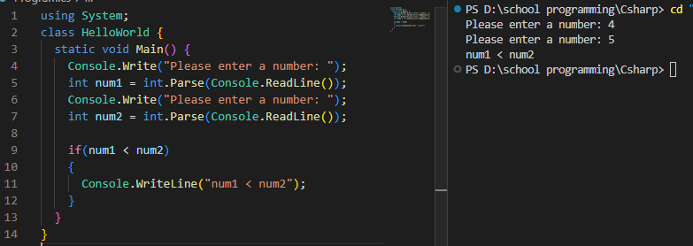
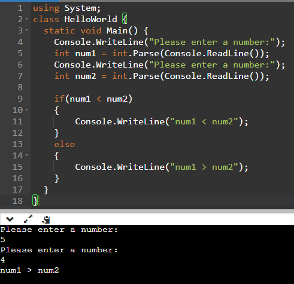
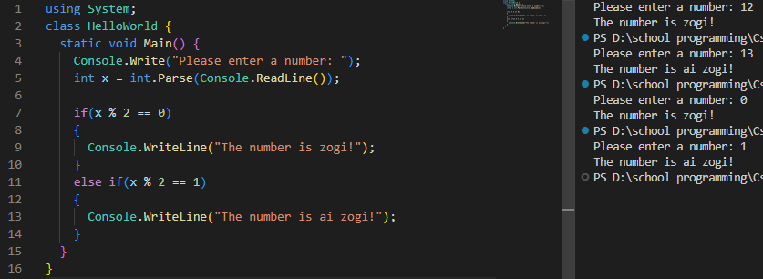

תנאים
,אם נרצה לבצע פעולה כלשהי רק לאחר אימות תנאי מסוים
.if() נשתמש בפעולה

?אם התנאי לא נכון, מה נעשה
.else נשתמש בפעולה

?אם התנאי לא נכון, ואנחנו רוצים לבדוק תנאי אחר, מה נעשה
.else if() נשתמש בפעולה

:התנאים הלוגיים הקיימים

:חשוב לשמור על הסדר הבא
.else ורק לבסוף ,else if() לאחר מכן ,if()
ישנה בדיקה שמשתמשים בה ברוב המקרים: לבדוק האם המספר הוא זוגי או אי זוגי

,ישנה אפשרות לבדוק תנאי
,אחרי שהתוכנית בדקה ואישרה את התנאי שלפני
:כמו בתרשים

,בדקנו תחילה את התנאי 2 > 1
,אחר כך עברנו לתנאי 3 > 1
,ואז לתנאי 4 > 1
,כל עוד התנאי מתקיימים
.הלולאה" לא תעצור והתוכנית תמשיך"
.if - בתיקייה הבאה תוכלו למצוא דוגמה לשימוש ב
התיקייה